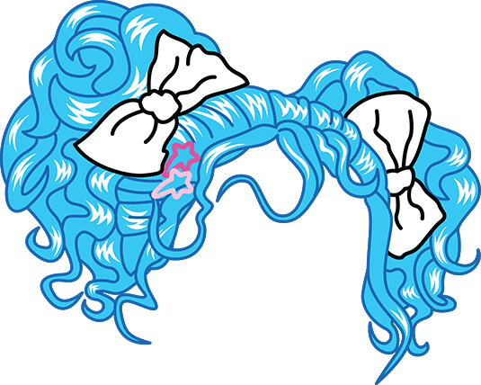
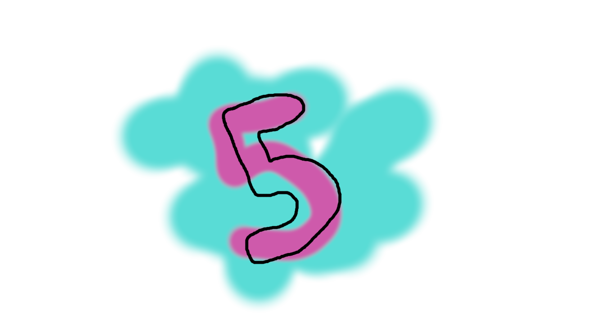
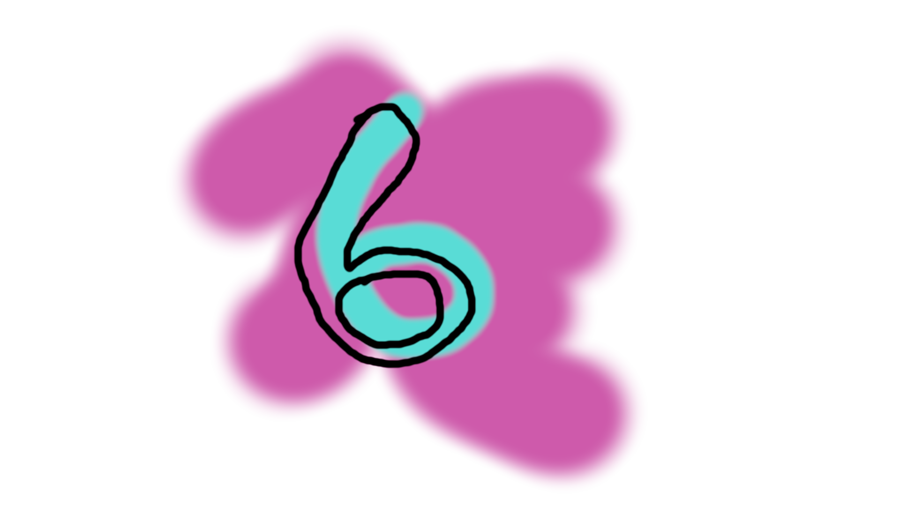
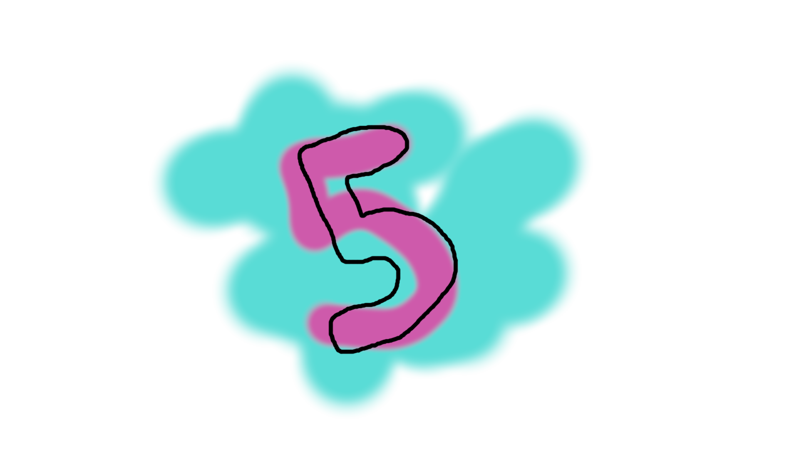
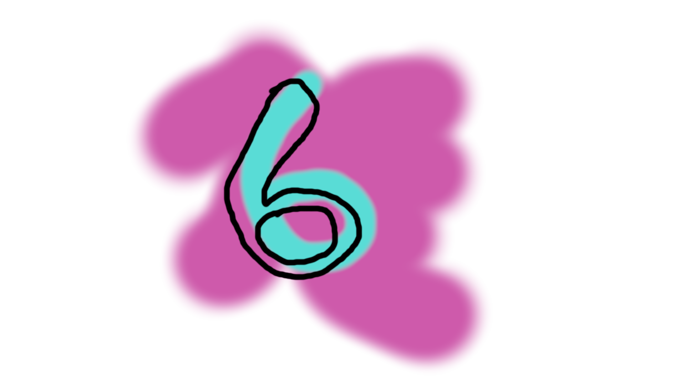

¡¡Aprende a decolorar tu cabello con estos sencillos pasos!! 👩‍🦳👩‍🦳
PASOS A SEGUIR
2.- Para poder decolorar el cabello a un tono que nos sirva para poder colocar un color fantasÃa, necesitamos que el decolorante tenga polvos azules para poder contrastar el amarillo que se generará durante la decoloración, pues entre más pálido sea el tono del amarillo de la decoloración, más brillante quedará el tono de color fantasÃa. Para esto existen muchas marcas de decolorantes que indican que tienen polvos azules o bien, que ayudan a matizar la decoloración; algunas opciones económicas que hacen bien este trabajo son: “Platinoxide†de Nutrapel, “Primer pulver†de Loquay y “Premium†de Anven. Es importante que te realices una prueba de “alergia†aplicando la mezcla decolorante de la marca de tu elección en un mechón pequeño de cabello, esto para probar si tienes alguna reacción que ponga el peligro tu salud.


 


